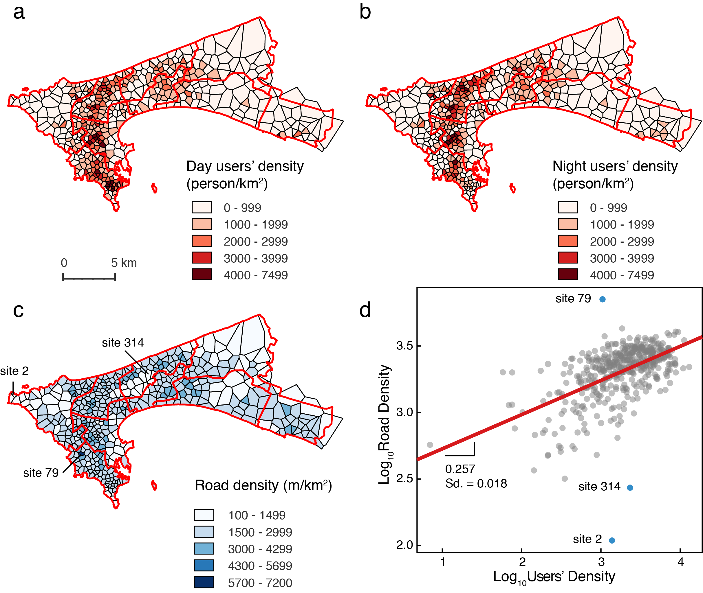

睿琪、张江老师和我参加了一次Orange公司组织的数据竞赛（D4D Challenge），竞赛内容也是NetMob15会议的一部分（今年的会议由MIT Media Lab主办，时间是3月底4月初）。我们利用Orange提供的Senegal的手机数据，结合OpenStreetMap的路网数据，对城市的动态人口分布，职住情况，交通效率等进行了分析。通过数据识别出了城市中基础设施（路网）与人口分布不匹配的区域，同时也构建了一个城市交通效率的指标，这些都可以为以后的城市规划决策提供更加科学、定量的依据。
更多的内容会在会议结果公布后更新。http://www.d4d.orange.com/en/home
How efficient a city is, how to make the city more efficient, might be an important question to its administrators and all of its residents. The most obvious efficiency will be the commuting efficiency, which will affect the experience of working people and energy saving of the city.
However, in Africa, high quality data is quite limited. But the digital ‘footprints’ such as call detailed records give us a clue. In this article, we mainly focus on these two aspects. We introduce a method to identify users’ home and work places from mobile phone data, and then we analysis the day and night, local and non-local population distribution in Dakar, the capital of Senegal. We show the dynamical patterns of human mobility and ’hotspots’ defined by population density. We combine the users’ records with road network data, and get the regression coefficient and mismatched region between population density and road density in Dakar. We also introduced a road network efficiency indicator, which provides a quantitative measure to guide transportation infrastructure development. Above all, the traffic flow patterns, ‘hotspots’ and mismatched regions could all be scientific basis for the government to make future urban planning policies.

More information will be updated after the conference. http://www.d4d.orange.com/en/home